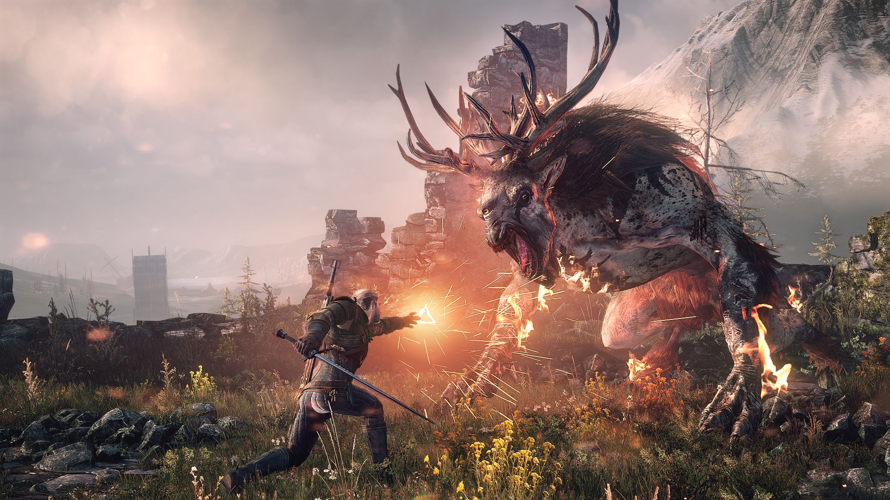
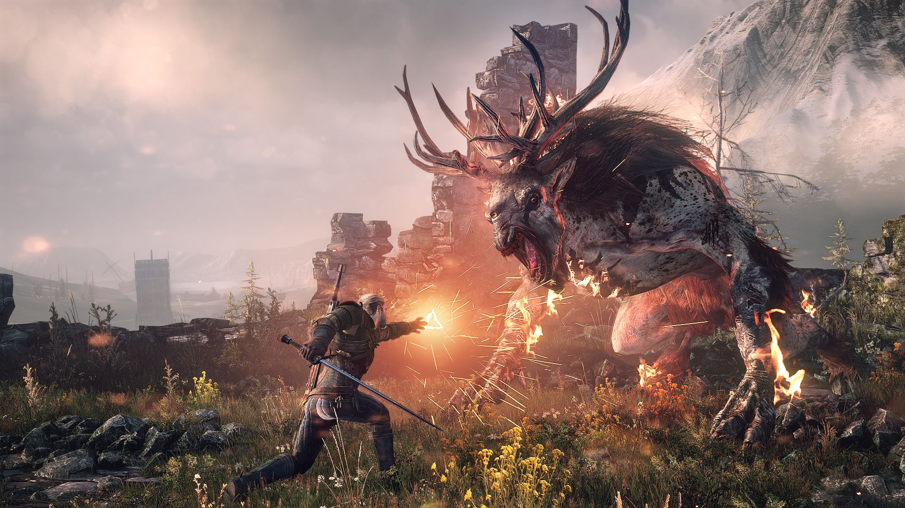

Moje hobby to gry, więc dałam coś z "Wiedźmina 3"
Bestiariusz
Kilka potworów z gry "Wiedźmin 3: Dziki Gon"
Bies
 
Biesy są dużymi czworonożnymi ssakami, prawdopodobnie spokrewnionymi z czartami.
Są to potwory kopytne, posiadają poroże, oraz troje oczu. Ich najgroźniejszą bronią
jest mordercza szarża, którą przeprowadzają podobnie jak woły, a także zdolności
hipnotyczne – za pomocą środkowego oka potrafią tak zamącić percepcję ofiary, by ta
nie widziała nic poza owym okiem. Jest zaliczany do grona reliktów.

Biesy są dużymi czworonożnymi ssakami, prawdopodobnie spokrewnionymi z czartami.
Są to potwory kopytne, posiadają poroże, oraz troje oczu. Ich najgroźniejszą bronią
jest mordercza szarża, którą przeprowadzają podobnie jak woły, a także zdolności
hipnotyczne – za pomocą środkowego oka potrafią tak zamącić percepcję ofiary, by ta
nie widziała nic poza owym okiem. Jest zaliczany do grona reliktów.
Kontakt
Znalazłeś błąd na stronie? Daj nam znać!